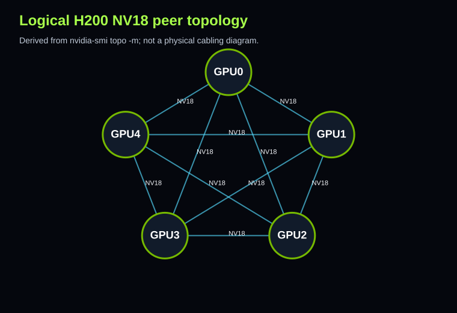

Release 0.1 · RunPod
H200 SXM5 NV18 NCCL Reference Dataset
Evidence-driven public benchmark: 5 visible NVIDIA H200 GPUs, NV18 topology between every visible GPU pair, P2P NVLink/read/write/atomic OK, NCCL collective suite outputs, parsed summaries, reports, and charts.
StatusPASS
GPUs5 x H200
TopologyNV18 all pairs
NVLink18 links/GPU @ 26.562 GB/s
Artifacts
Logical topology

Diagram is logical, derived from nvidia-smi topo -m, not a physical cabling map.